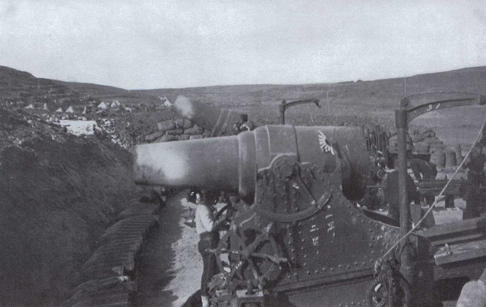
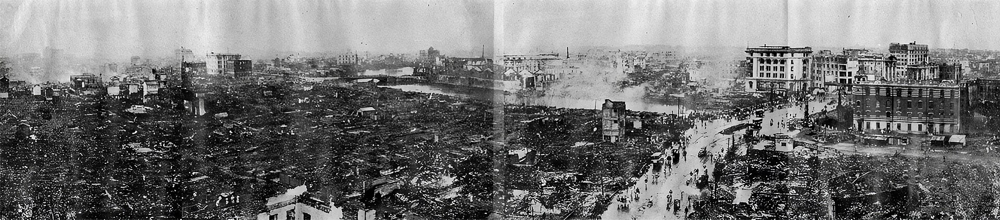
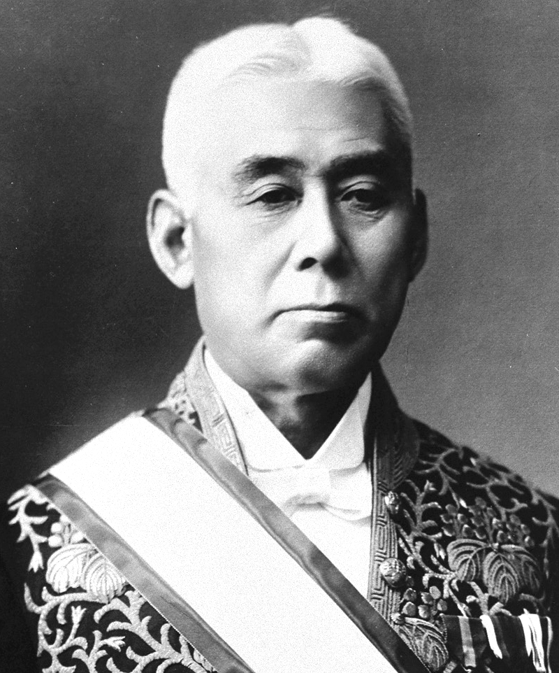
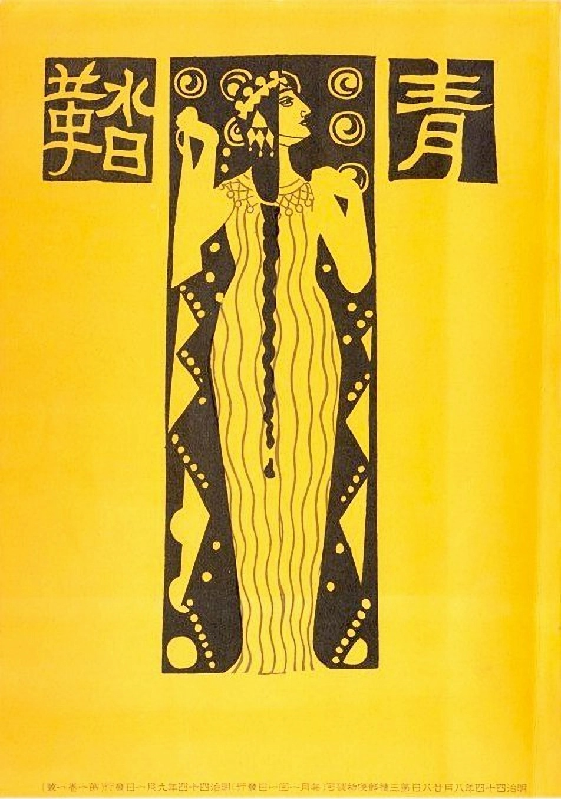
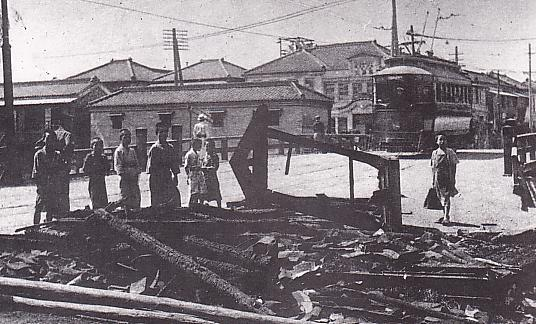
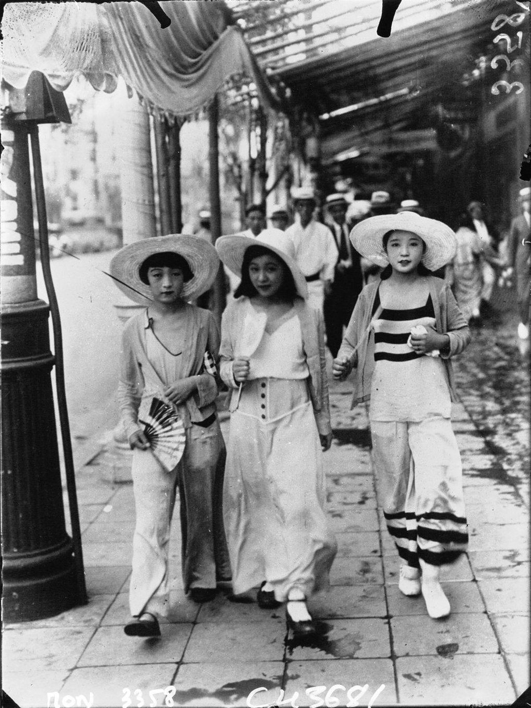

Unit 10 · Study guide · Japan
Imperial Japan and "Imperial Democracy" 大正デモクラシー
Colonies abroad, parties and protest at home, and a new city culture, 1900–1931
ContentsOverview
The unit in one paragraph
pp. 382, 398–399
In the early 1900s Japan joined the great powers. An alliance with Britain (1902) and victory over Russia (1905) gave it a foothold in Manchuria, and in 1910 it annexed Korea. World War I brought an economic boom and new demands on China, followed by a decade of cooperation with the West. At home the institutions the oligarchs had built, such as conscription, schools, and mass media, also gave people the tools to oppose the state. Hara Takashi made the Seiyūkai the dominant party, party cabinets became the rule after 1924, and all men over 25 won the vote in 1925. Intellectuals, feminists, outcasts, tenant farmers, workers, and minorities organized to be heard. After the 1923 earthquake, Tokyo became the stage for a consumer culture of department stores, movies, and "modern girls," while critics looked for a purer Japan in the countryside. When the Great Depression and the Manchurian crisis hit around 1930, the military broke free of civilian control and party government ended in 1932.
- To what extent was Japan's descent into fascism in the 1930s preordained?
- Why did the forces working against it fail?
- What was this period's legacy for postwar Japan?
Timeline at a glance
Alliance and war with Russia
pp. 382–383
Japan began its drive for great-power status with the Anglo-Japanese Alliance of 1902. Each partner promised to defend the other if a third country joined its enemy in war, so in a war with Russia, no other power could join without fighting Britain too. p. 382
Russia held a leasehold on the Liaodong peninsula and had fortified Port Arthur, which threatened Japan's interests in Korea. When Russia refused to make concessions, Japan launched a surprise attack on Port Arthur in 1904. It hoped to win a short war before Russia could bring its larger army east, but the siege dragged on. By the time Port Arthur fell, Japan's army was exhausted. p. 382
U.S. President Theodore Roosevelt offered to negotiate, and the Treaty of Portsmouth (1905) gave Japan:
- the southern half of Sakhalin (Karafuto),
- Russia's lease on the Liaodong peninsula,
- the South Manchurian Railway between Port Arthur and Mukden, with its mines,
- Russia's acknowledgment that Japan dominated Korea.

By showing that a "yellow race" could beat a "white" one, Japan inspired other Asians to hope that they too could throw off colonial rule. At home, though, the treaty brought no indemnity, which set off the Hibiya riots (Part 9). pp. 383, 388
How Japan's empire grew
Taking Korea
p. 383
Japan used the war with Russia as cover to take control of Korea, one step at a time. p. 383
- 11904, early in the war. Two days before declaring war, Japan landed troops in Korea. During the siege of Port Arthur it forced the king to accept a limited protectorate that made Korea its ally and subject to Japan's lead in administration. The Japanese army occupied the country.
- 2Six months later. Korea had to accept Japanese financial and diplomatic advisers. They reformed the currency, drew up a budget, and took over communications; the army imposed martial law.
- 31905. The Taft–Katsura Agreement: the United States accepted Japan's control of Korea, and Japan accepted U.S. colonization of the Philippines.
- 41906. Korea became a full protectorate with Itō Hirobumi, author of Japan's constitution, as resident general. Japanese advisers gave orders to government offices, Japanese judges ran the courts, the Korean army was disbanded, and Japan took over Korea's diplomacy.
- 51907–1909. When the king complained to the Hague Peace Conference, Itō forced him to abdicate. In 1909 a Korean nationalist assassinated Itō.
- 61910. Japan annexed Korea and formalized its control of Taiwan. Both stayed in the empire for the next thirty-five years.
What the empire was for pp. 383–384
Japan expected its empire to bring prestige, coal and iron for its factories, food for its people, markets for its goods, and room for its growing population.
Taiwan
Supplied sugar financed by Japanese capital and, after 1920, rice grown on family farms, which also helped the island's economy develop.
Korea
The Oriental Development Company bought land to sell to Japanese settlers and channeled capital to Japanese firms. The military government built roads, railways, and schools while crushing all dissent. Japanese settlers lived better than Koreans and had privileges in schooling and jobs.
Unit 11 follows Korea under Japanese rule in detail.
China and the West
pp. 383–384
World War I and China
World War I spread to East Asia through the 1902 alliance and helped Japan both economically and diplomatically. Because Germany was Britain's enemy, Japan took Germany's leasehold on China's Shandong province and a mandate over German islands in the Pacific. In 1918 Allied forces joined Japan in invading Siberia after the Russian Revolution brought the Communists to power. pp. 383–384
Japan also tried to impose the Twenty-One Demands on China. Most of them confirmed and extended Japan's privileges in Manchuria and along the coast. China protested at the Versailles Peace Conference without result: despite the U.S. open door policy, no Western power would challenge Japan in China. The last set of "requests" would have made China a Japanese protectorate, but outcry in China and abroad forced Japan to back down. p. 384
Cooperation with the West, 1919–1930
- Joined the League of Nations.
- Washington Conference (1921): keep the status quo in the Pacific and China, prevent a naval arms race.
- Business delegation abroad (1921–22) to make trade deals.
- Kellogg–Briand Pact (1928): outlawed war to settle disputes.
- London Naval Treaty (1930): further limits on the navy.
- No clause on racial equality in the Versailles treaty.
- The U.S. Oriental Exclusion Act (1924).
- The navy objected to the London treaty; the army's worries about China were ignored.
- In 1931 the army took Manchuria on its own, ending the era of cooperation.
p. 384
Economic development
pp. 384–386
Japanese companies adopted the technology and management methods of the "second industrial revolution." Japan's electrical technology became second to none: Kyoto had electric streetcars in 1895. Mass production needed standardized equipment and Taylorism, which Japan adapted to make its workers more efficient. Local research centers found foreign technology and modified it for Japanese buyers, and the military pushed big firms into new metals and chemicals and promoted cars and airplanes. p. 384
A dual structure pp. 384–385
Conglomerates called zaibatsu ("financial cliques") dominated the most modern sectors: mining, shipbuilding, machinery, steel, and chemicals. Each member company ran one business and was legally separate, but the group's bank, a central advisory committee, and interlocking boards of directors tied them together. Some zaibatsu formed cartels, as in textiles and shipping. Zaibatsu chairmen had access to bureaucrats and cabinet ministers, who steered public investment their way. The other side of this dual structure was small firms making processed food, housing, clothing, and ceramics and toys for export, often as suppliers and subcontractors to the big firms.
Boom, then bust pp. 385–386
World War I was a windfall. Japanese coal fueled locomotives and factories, Mitsubishi built ships and ran a worldwide shipping line in competition with the OSK line, and firms profited from Allied orders for munitions. Japanese textiles and consumer goods filled Asian markets left empty when British exports withdrew. Manufacturing's share of national income passed agriculture's.
The 1920s were uneven. Companies assumed wartime demand would last, but Britain took back its markets in China and South Asia and European factories recovered, leaving Japanese firms overextended. They had just recovered when the Great Kantō Earthquake leveled factories between Tokyo and Yokohama. Most firms rebuilt on generous government credit to banks, which led to a credit crisis in 1927. Silk sales slipped and Chinese cotton mills cut into Japan's biggest Asian market. The old zaibatsu still grew by absorbing other firms, and the chemical firm Chisso (founded 1908) became a new zaibatsu, Japan's third-largest manufacturer, and the industrializer of northern Korea. When the Great Depression hit at the end of 1929, Japan's economy was already depressed. Japan raised tariffs, sure that its colonies gave it almost everything it needed except oil and scrap iron.

The numbers: who produced Japan's income p. 386
| Year | Total | Primary | Secondary | Tertiary |
|---|
Party government
pp. 385–387
After the Diet opened in 1890, the public saw the oligarchs' control of cabinet appointments as proof that "clique government" by Satsuma and Chōshū men lived on. Two camps took shape. p. 385
Founder of the military. Built a faction of conservative bureaucrats, prefectural governors, members of the Privy Council, and the upper house. In 1907 he let the military issue orders in the emperor's name, independent of the prime minister.
Itō, author of the constitution, worked through the elected lower house. His protégé Hara promised Seiyūkai support for the cabinet during the war with Russia, and Yamagata trusted him with the powerful post of home minister.
How Hara built party power pp. 385–386
The Home Ministry appointed prefectural governors and district chiefs and ran the police, health bureau, and public works. Prefectural officials supervised elections and influenced the local economy, so a prefecture whose bureaucrats backed the Seiyūkai was likely to elect Seiyūkai members. Hara also perfected pork-barrel politics. Earlier parties had simply opposed spending; the Seiyūkai's "positive policy" spent on development. Railroad lines reached its strongholds in remote mountain villages, and roads, schools, bridges, irrigation works, and harbors went to districts that voted for it.
Businessmen gave political funds for favors and seats on company boards. Some Diet members bought votes through election brokers or prefectural assembly members, spreading the "stench of corruption." p. 386

Widening the vote p. 386
Hara became prime minister in 1918. Yamagata feared revolution after the Bolshevik takeover in Russia and the 1918 rice riots, and Hara convinced him that a larger electorate under party control was the safest way to channel unrest. In 1921 an unemployed railroad worker assassinated Hara for what he saw as Hara's disdain for the military.
Between 1924 and 1932 the power to form the cabinet passed back and forth between the two main parties, and former bureaucrats and governors ran for the Diet. It was not in the Seiyūkai's interest to widen the vote, but public opinion, other parties, and the Privy Council's fear of upheaval pushed through universal male suffrage in 1925. In the 1928 election eight proletarian candidates won out of 450 seats: workers had a voice, but the conservative majority was safe. p. 386
- The elected lower house
- Choosing the cabinet, 1924–1932
- Prefectural offices and parts of the bureaucracy through Home Ministry patronage
- The Privy Council
- The House of Peers
- Much of the bureaucracy
- The military
Party cabinets rested on a practical balance of power, not on law or precedent, even though the constitutional scholar Minobe Tatsukichi tried to give them a theoretical basis (Part 7). p. 386
The end of party cabinets
pp. 386–387
The crises of the late 1920s and early 1930s tested the limits of this parliamentary democracy: the Great Depression, and fears of Russian and Chinese threats to Manchuria. Ultranationalists inside and outside the military accused the parties of treason for weakening Japan through corruption.
- 11930. An ultranationalist shot Prime Minister Hamaguchi Osachi for signing the London Naval Treaty. He died of his wounds nine months later.
- 21931. Convinced the party cabinet would sacrifice Japan's interests in Asia, army colonels took over Manchuria on their own.
- 3Early 1932. A former finance minister and an industrialist blamed for the Depression were assassinated. Naval cadets, junior army officers, and civilians killed Prime Minister Inukai Tsuyoshi.
- 41932–1945. Every prime minister was a military man, except two who both supported the military. Parties still held the lower house but got only minor cabinet posts.
Even through fifteen years of war, 1931–1945, the Diet kept meeting, the cabinet still decided policy, and the constitution stayed the law of the land. What changed was that the military's right of access to the emperor put its actions beyond debate. p. 387
Liberals and kokutai
pp. 387–388
Prewar critics argued that liberalism's focus on the individual contradicted kokutai, the idea that all Japanese belong to one body politic, often translated "national essence." Democracy, they said, was a foreign import opposed to native customs of harmony, consensus, and service to the emperor. Many Japanese proved them wrong by working for a more open government and society: academics, journalists, feminists, outcasts, and working men and women who rioted and organized unions. p. 387
- Representative, constitutional government and rule of law
- Individual rights and freedom from undue state interference
- Society is natural; the state is man-made
- The emperor has existed since the beginning of time
- He unites state and society
- No line between natural society and man-made government
Liberals were patriots. They supported industrialization and making Japan the equal of the West, and never questioned the emperor's central place, even while criticizing the men around him. Still, liberal views could cost a career. pp. 387–388
Yoshino Sakuzō
Argued that the people are the basis of the state and that its aim is their well-being, so the public interest must outrank the private interests of oligarchs, bureaucrats, politicians, and businessmen. He had to resign from Tokyo University.
Minobe Tatsukichi
Argued that under the constitution the Diet, above all the lower house, represented the people, and that sovereignty lay in the state, with the emperor as one of its organs. In 1935 he was accused of disrespect for the emperor, his writings were banned, and he lost his seat in the upper house.
Women and democracy
p. 388
Educated women promoted democracy through their organizations. Many were teachers who were Christian or influenced by missionaries. The Tokyo Women's Reform Society (1886) opposed concubinage and prostitution as trafficking in women, a hard sell when oligarchs kept concubines and the crown prince was a concubine's son. Its work for earthquake victims and former prostitutes was better received. In 1901 its members joined the Greater Japan Women's Patriotic Association, which let them speak to women in public with government support.
The "new woman"
Two events of 1911 marked the arrival of the "new woman." The staging of Henrik Ibsen's A Doll's House, whose heroine Nora walks out on her husband and children, offered a scandalous alternative to the state ideal of the "good wife and wise mother." Matsui Sumako, who played Nora, became Japan's first Western-style actress. The journal Bluestocking began as a literary magazine and became a forum on women's roles.
In its pages Hiratsuka Raichō wanted the government to protect motherhood, while the poet Yosano Akiko argued that state support would be degrading and cost women their independence. Both agreed that marriage was not sacred, patriarchy could be challenged, and women deserved equal legal, educational, and social rights.

The 1920s: birth control and the vote
Britain and the United States had given women the vote after World War I, and growing numbers of Japanese women followed politics in newspapers and magazines, which convinced some politicians that women's rights marked an advanced society. p. 388
Mass movements
pp. 388–393
Modern mass movements grew out of imperialism. In 1905 newspapers and speakers told the public that the war with Russia had ended without the indemnity a great power deserved and with little land to justify the soldiers' sacrifices. The Hibiya riots began at Tokyo's Hibiya Park outside the palace and lasted three days. Rioters destroyed fifteen streetcars and more than 70 percent of the police boxes in the city, smaller riots broke out in Kobe and Yokohama, and all but two of the forty-four prefectures reported rallies. pp. 388–389
Tokyo saw nine serious riots between 1905 and 1918. Rioters attacked police stations and government offices, but in the emperor's name: they blamed evil advisers, not the throne itself. p. 389

The rice riots of 1918 p. 390
The rice riots protested high prices, degrading work, and government incompetence. They began with fishermen's wives on the Toyama coast and spread to city crowds who denounced war profiteers and claimed free speech, tenant farmers who wanted lower rents and decent treatment, and coal miners who demanded higher wages and respect. Out of them grew the movements of the 1920s.
Three movements of the 1920s
| Movement | Grievance | Organization | Tactics and results |
|---|---|---|---|
| Burakumin | Lost their monopoly on leatherwork; household registers exposed their origins; refused by schools, employers, landlords, baths, barbers, and spouses; menial tasks in the army. | State Harmony Movement (1920) for gradual reform; young burakumin found the Leveller's Society (1922). | Split between education and revolution. Denunciation campaigns forced public apologies; 1926 campaign against military service. Backed the war only after 1937. |
| Tenant farmers | The 1898 Civil Code gave landlords full rights. 28% of farm families owned no land and 41% rented part. Real farm income fell 30% in the 1920s. | Unions from the 1910s; a national federation (1922) with nearly 700 branches. | More than 18,000 disputes in the 1920s; rent refusals. Unions disbanded for national unity after 1937. |
| Labor unions | Low wages, layoffs, loss of autonomy as owners removed labor bosses, lack of respect. | Friendship Society (1912) became the Japan Federation of Labor (1921); never more than 8% of industrial workers. | 100+ disputes 1902–1917, hundreds of strikes a year in the 1920s. Won seniority raises and benefits; bargained for wages, severance pay, shorter days, an end to child labor. |
Workers were divided. Skilled, well-paid men in heavy industry could read newspapers and socialist theory; textile mills hired women and girls, still over half the factory workforce in 1930. Below them came small-firm workers, rickshaw pullers, and delivery boys, and at the bottom the miners. The 1907 riot at the Ashio copper mine was started by the best-paid ore diggers. In 1919 the Hara cabinet read the Public Order and Police Act of 1900 to allow unions and strikes that stayed nonviolent. pp. 391–392
Negotiations between strike representatives and company directors
At the Yokohama Dock Company on September 28, 1921, worker representatives Itō, Iwasa, and Shiga met directors Tōjō and Miyanaga. The exchange, in brief:
- The workers ask for a 20 percent raise: most earn about 1 yen 40 sen a day, and with a wife and children they cannot make ends meet. Under current severance pay, a fired man is reduced to poverty.
- Miyanaga pleads the shipbuilding depression: the company takes orders below cost to avoid layoffs, so it cannot raise pay.
- Asked to promise no layoffs, he will say only "insofar as possible," and refuses to commit on severance pay.
- The workers call this a total lack of sincerity. Citing a man fired for talking to a worker in another shop, Iwasa says the company's kind words are "the attitude of a man who stands laughing after having strangled seven people."
Adapted from Andrew Gordon, The Evolution of Labor Relations in Japan (Harvard, 1985), pp. 116–119. The book's questions are in the Review kit.
Minorities and radicals
pp. 393–395
Nationalist propaganda said the Japanese were uniquely homogeneous, but the meeting of colonialism and modernity created groups that society saw as different. p. 393
Ainu
Labeled "formerly indigenous people" and told to settle in villages and assimilate, giving up their language, tattoos, and earrings, even while shown off as tourist attractions. As their land was sold off they became tenants, laborers, and welfare recipients. In the 1920s Ainu scholars recorded songs and legends; activists fought alcoholism and violence. Fearing communism near the Soviet border, officials and assimilationist Ainu founded the Ainu Society in 1930.
Ryukyuans
Had a king and aristocracy that made sense to Japanese officials. Ryukyuan nobles won favors from the prefectural governor, claimed to speak for commoners, and were insulted when placed on a par with the Ainu.
Koreans in Japan
Nearly 300,000 by 1930, many pushed off the land by colonial policy. They did dirty, dangerous jobs at half Japanese wages and were legally citizens, yet stereotyped as stupid, lazy, and vicious. After the 1923 earthquake, accused of setting fires and poisoning wells, thousands were killed by vigilantes. Students who backed independence faced arrest and death.
Radicals pp. 394–395
The government suppressed ideas it judged dangerous. The Socialist Democratic Party of 1901 lasted only hours before it was banned. It wanted public ownership of land and capital, abolition of the military and the House of Peers, and universal suffrage, but it did not reject the emperor system.
| Who | Ideas | Fate |
|---|---|---|
| Kōtoku Shūsui · Kanno Suga | Socialists; Kanno called for overthrowing the government and killing the emperor | Sentenced to death in the Great Treason Trial (1911), though innocent of the specific charges |
| Ōsugi Sakae · Itō Noe | Anarchist; feminist and anarchist | Strangled by police after the 1923 earthquake |
| Kaneko Fumiko | Nihilist who backed Korean independence | Died in prison |
| Kobayashi Takiji | Proletarian writer, The Cannery Boat (1929) | Died at police hands, 1933 |
| Sakai Toshihiko · Kawakami Hajime | Socialist organizer; economist turned Marxist | Sakai helped secretly found the Japanese Communist Party (1922) |
The Peace Preservation Law promised punishment for attacks on the emperor system or capitalism. In the early 1930s police arrested more than ten thousand people a year to make them give up socialism and accept Japan's sacred unity under the emperor. Those who refused to confess and convert stayed in prison until after World War II. p. 395
Modern urban culture
pp. 395–398
Industry and a growing bureaucracy created a new middle class of salaried white-collar workers. Unlike the old middle class of shopkeepers and landlords, they got their jobs through education and enjoyed lifetime employment with benefits such as subsidized housing and medical care; pay depended on seniority as much as skill. In Natsume Sōseki's Sanshirō (1908) a young man from the country is torn between scholarship, business, and home; Kokoro (1914) caught the sense that an age of great expectations ended when the Meiji emperor died in 1912. His son, the Taishō emperor, was seen as a lesser figure. p. 395
Tokyo after the earthquake p. 395
Rebuilt in steel and concrete after 1923, downtown Tokyo became the setting for modern culture. The middle class moved to suburbs south and west along private railroads, light industry moved east, and heavy industry south to Kawasaki. Offices, shops, and entertainment arcades filled the center. This was a second wave of westernization, driven by personal taste, not national goals.
Department stores
Added theaters, galleries, exhibition halls, and rooftop arcades after the earthquake.
Commuting
Vending machines at Tokyo and Ueno stations (1926); Asia's first subway, Ginza to Asakusa (1927). Entertainment districts grew around train terminals.
Mass media
Self-help books and magazines for every class, sex, and age; Western classics in translation; movies; government radio from the mid-1920s; pachinko.
Moga, mobo, and "ero, guro, nansensu" p. 398
Mass culture promoted a private world of pleasure and self-expression. In Tanizaki Jun'ichirō's novel Naomi (1924–25) a café waitress becomes a modan gaaru, a "modern girl" or moga, who bobs her hair, wears revealing dresses, and dances the Charleston. Her companion was the mobo, the "modern boy"; together they scandalized onlookers by smoking and holding hands in public.
The late 1920s are summed up as ero, guro, nansensu: eroticism, grotesquerie, and nonsense. The phrase pointed to the flood of foreign words and to a perceived decline in morals, as if materialism, individualism, and decadence had replaced diligence, decorum, and duty.

Houses for the middle class. Houses built after the earthquake borrowed Western styles. Rooms had fewer functions but more privacy, separated by walls, doors, and corridors. Guests were received in a front parlor with sofa, chairs, and carpet, and the telephone left little excuse for surprise visits. The living room ideally held a phonograph and a radio; the kitchen had a gas range, an electric fan, and an electric rice cooker. Old houses needed someone home at all times to greet guests and guard the house. A lockable Western-style front door let the housewife go shopping, visit friends, or see a movie.
Kobayashi Ichizō, entrepreneur (1873–1957)
- 1893–1906 Wanted to be a writer, but after Keiō University joined the Mitsui Bank. Left in 1906 to run a private electric railroad near Osaka.
- 1913–1919 To lure riders to the hot-springs resort of Takarazuka, built a zoo and the Takarazuka Girl's Theater (1913); founded its Music Academy (1919). His line became the Hankyū railroad (1918), with suburban housing for the new middle class.
- 1924–1929 Opened a market at the Osaka terminal (1924) that became the Hankyū department store (1929). The revue Mon Paris (1927) introduced the chorus line.
- 1930s Founded the Tōhō film company with show times and prices set for workers; helped start Japan's first professional baseball league (1936).
- 1940 Minister of commerce and industry and special trade envoy to the Netherlands.
Kobayashi wanted his actresses to be of "unquestionable virtue." The academy taught etiquette, ethics, and homemaking with singing and dance; women played male roles and Asians from the empire, and had to retire while young enough to marry well and become good wives and wise mothers.
Textbook source: Jennifer E. Robertson, Takarazuka (California, 1998). The book's questions are in the Review kit.
Alternatives to modernity
p. 398
People repelled by modern culture found comfort in the folk traditions of rural Japan, the high art of ancient Japan, and the communities of the new religions.
Folk tradition
The ethnographer Yanagita Kunio traveled from Tōhoku to the Ryukyus collecting folk tales and customs he saw as pure, a cultural authenticity lost in the cities.
Ancient art
Masuda Takashi, builder of the Mitsui zaibatsu, supported the national treasure system (from 1897). It mostly honored religious objects near Kyoto, asserted Japan's sovereignty over its past, and showed Japan had a world-class culture.
Founded after 1905, often on Nichiren Buddhism, they offered faith healing, community, and identity to uprooted city migrants. Deguchi Onisaburō of Ōmoto-kyō declared himself the Maitreya, the Buddha of the future; the state suppressed the sect in 1921 and 1935.
The most hostile to modernity. It called farming the ethical foundation of the state and preached a "farm bushidō" of diligence, frugality, fortitude, and loyalty. It blamed cities and capitalism for selfishness, and often turned violent in the 1930s.
Light and shadow, 1900–1931
pp. 398–399
Foreign affairs shaped Japan's economy, politics, society, and culture. The urge to challenge white supremacy and rise among nations defined its national identity, and colonies became an economic necessity for raw materials and living space. The economy grew unevenly, with huge conglomerates beside small businesses, and a wartime boom followed by contraction left Japan depressed before the worldwide Depression. The oligarchs found politicians harder to control than they expected, and outside the Diet many groups pressed the state to improve their lives. The 1923 earthquake sped the separation of factory from office and work from home, opening space for an urban culture that seemed to put individual goals above the nation.
- A robust parliamentary democracy backed by all adult men
- A well-educated middle class
- Mass media that made movements for the downtrodden possible
- The chance to make choices rather than follow one's forebears
- A military increasingly free of civilian control
- Industrial workers left in poverty
- Conflicting visions of who was Japanese and what Japan's role should be
- After 1930, critical voices looked as dangerous as foreign threats
The book returns to Japan in Chapter 26, where these trends play out in war (Unit 14) and under the Occupation (Unit 17). Unit 11 turns to Korea under Japanese rule. p. 399
Test yourself
Flashcards
Who's who
| Person | Why they matter |
|---|---|
| Yamagata Aritomo | Founder of the military; led the conservative faction; freed the military from the prime minister (1907) |
| Itō Hirobumi | Author of the constitution; resident general of Korea (1906); assassinated 1909 |
| Hara Takashi | Seiyūkai leader and home minister; prime minister 1918–21; built party power; assassinated 1921 |
| Hamaguchi Osachi | Prime minister who signed the London Naval Treaty; shot 1930 |
| Inukai Tsuyoshi | Prime minister killed in 1932; last party cabinet |
| Yoshino Sakuzō | Liberal: the people are the basis of the state |
| Minobe Tatsukichi | Emperor as an organ of the state; banned in 1935 |
| Hiratsuka Raichō · Yosano Akiko | Bluestocking feminists who debated state support for motherhood |
| Matsui Sumako | Played Nora in A Doll's House (1911); first Western-style actress |
| Katō Shidzue | Brought Margaret Sanger to Japan (1924) to promote birth control |
| Kōtoku Shūsui · Kanno Suga | Socialists condemned in the Great Treason Trial (1911) |
| Ōsugi Sakae · Itō Noe | Anarchists killed by police after the 1923 earthquake |
| Natsume Sōseki | Novelist of the new middle class: Sanshirō, Kokoro |
| Tanizaki Jun'ichirō | Naomi (1924–25), the novel of the "modern girl" |
| Kobayashi Ichizō | Hankyū railroad, department store, Takarazuka, Tōhō |
| Yanagita Kunio | Ethnographer who collected folk tales |
| Deguchi Onisaburō | Leader of Ōmoto-kyō; claimed to be the Maitreya |
Key dates
| 1902 | Anglo-Japanese Alliance |
| 1904–1905 | Russo-Japanese War · Treaty of Portsmouth · Taft–Katsura · Hibiya riots |
| 1906 · 1907 | Korea a protectorate · military orders in the emperor's name; Ashio riot |
| 1910 · 1911 | Korea annexed · Great Treason Trial, A Doll's House, Bluestocking |
| 1912 | Meiji emperor dies; Taishō emperor; Friendship Society |
| 1914–1918 | World War I; Shandong; Twenty-One Demands; GNP +40% |
| 1918 · 1919 | Rice riots, Hara prime minister, Siberia · electorate to 5% |
| 1920 · 1921 | Harmony Movement · Hara killed; Washington Conference; Japan Federation of Labor |
| 1922 | Leveller's Society; tenant federation; Communist Party; women at political meetings |
| 1923 | Great Kantō Earthquake |
| 1924 · 1925 | Oriental Exclusion Act; party cabinets · universal male suffrage; Peace Preservation Law |
| 1926 · 1927 | Shōwa emperor · credit crisis; first subway |
| 1928 · 1929 | Kellogg–Briand; 8 proletarian members elected · Great Depression |
| 1930 · 1931 · 1932 | London Naval Treaty, Hamaguchi shot · Manchuria · Inukai killed |
Discussion questions
Open each for points the reading gives you to work with. The first three are the chapter's opening questions; the later ones are the textbook's questions on its Documents and Biography features.
To what extent was Japan's descent into fascism preordained?
- Real alternatives existed: party cabinets 1924–32, universal male suffrage, unions, feminist and burakumin movements, cooperation with the West (pp. 384, 386, 388–392).
- Built-in weaknesses: party rule rested on no law; the Privy Council, House of Peers, bureaucracy, and military stayed outside party control (p. 386); the military could issue orders in the emperor's name from 1907 (p. 385).
- The Depression and fears for Manchuria tipped the balance (pp. 386–387, 399).
Why did the forces working against militarism fail?
- Parties were tainted by vote buying and pork-barrel deals, so ultranationalists could call them traitors (pp. 386–387).
- Liberals never challenged the emperor and were punished when they redefined his role (pp. 387–388).
- Unions never organized more than 8% of workers; movements split over tactics (pp. 391–392).
- The Peace Preservation Law and police silenced the left (p. 395); assassinations removed Hara, Hamaguchi, and Inukai.
What was this period's legacy for postwar Japan?
- Experience with elections, parties, and cabinets (p. 399).
- An educated new middle class with lifetime employment and seniority pay (p. 395).
- The dual structure of conglomerates and small subcontractors (pp. 384–385).
- Mass media, consumer culture, and organized movements; see Unit 17.
How did empire shape Japanese politics at home?
- The 1905 peace terms set off the Hibiya riots, the first modern mass movement (p. 388).
- Colonies were meant to supply raw materials, food, markets, and living space (p. 383).
- Disputes over the London Naval Treaty and Manchuria ended party government (pp. 384, 387).
- Koreans in Japan faced violence after the earthquake (p. 394).
Documents: How do the strike representatives and the company directors see the company's goals?
- The directors present the company as sacrificing profit, even taking orders at a loss, to avoid layoffs (p. 392).
- The workers see it protecting profits at their expense and treat a firm promise on severance pay as the test of sincerity (p. 393).
Documents: How does each side value work, and how should workers be treated?
- For the workers, wages are "a matter of life and death" for a family over a 25-day month (pp. 392–393).
- For management, work depends on a shrinking shipbuilding market.
- The workers demand respect and fair rules, citing a man fired for talking to another worker; employers answered such demands with seniority raises and benefits, mostly after strikes (p. 391).
Biography: Why did Kobayashi Ichizō take an interest in popular culture, and who was his audience?
- To give people reasons to ride his trains: suburban homes, a zoo and theater at Takarazuka, a store at the terminal, baseball (p. 397).
- Audiences: the new middle class, workers (film times and prices), and respectable women.
Biography: What did Kobayashi contribute to modern Japanese culture, and how did it fit official values?
- He linked railroads, housing, retail, theater, film, and sports around the commuter (p. 397).
- Takarazuka still upheld "good wife, wise mother": homemaking lessons and early retirement to marry (p. 397). Modern mass culture and conservative gender norms existed side by side.
Key terms
Click to expand
Terms are grouped by topic. Where a term depends on another, the entry says what it builds on, so read those first. Hover or tap any dotted term in the text for a quick definition, or open ✎ at the bottom right. † marks a term or fact from outside the textbook. Terms from earlier units are repeated briefly where you need them.
From earlier units (review)
- Oligarchs
- The small, self-selected group of men, mostly from the Satsuma and Chōshū domains, who held power in the emperor's name after 1868. After 1890 the public saw their hold on cabinet appointments as "clique government." p. 385; Unit 8
- Diet
- Japan's national assembly from 1890, with an elected lower house and the appointed House of Peers. In this unit the lower house becomes the base of party power. pp. 385–386; Unit 8
- House of Peers
- The upper house of the Diet, made up of nobles and appointees. It stayed outside party control and in 1931 blocked women's local suffrage. pp. 386, 388Builds on: Diet
- Privy Council
- A council of advisers to the emperor, first set up to review the constitution. Yamagata's faction included its members, and it stayed beyond party control, though its fear of social upheaval helped pass universal male suffrage. pp. 385–386; Unit 8
- Good wife, wise mother
- The government-sponsored ideal that women serve the state by managing the household and raising children. The "new woman" and Nora in A Doll's House challenged it; Takarazuka upheld it. pp. 388, 397; Unit 8
- Civil Code (1898)
- The 1898 law code. For this unit, what matters is that it let landlords buy, sell, and lease land with no protection for tenants who might have farmed it for generations. p. 390; Unit 8
- Household registration
- The system under which each household registered its residence, births, deaths, and marriages. Because it recorded family origins, burakumin could not escape their past. p. 390; Unit 8
- Ōmoto-kyō
- The new religion founded by Deguchi Nao and organized by her adopted son Deguchi Onisaburō. In the 1920s he declared himself the Maitreya who would found a new order; the state suppressed the sect in 1921 and 1935. p. 398; Unit 8Builds on: new religions
Empire and diplomacy
- Anglo-Japanese Alliance (1902)
- The first alliance in which a Western power treated an Asian nation as an equal. Each country promised to defend the other if a third party joined its enemy in war. It limited the Russo-Japanese War and brought Japan into World War I. pp. 382–383
- Leasehold
- Territory a power rented from another state for a set term but controlled in practice, such as Russia's, then Japan's, lease on the Liaodong peninsula, or Germany's in Shandong. pp. 382–383
- Indemnity
- Money a defeated country pays the winner. The 1905 peace with Russia brought none, which set off the Hibiya riots. p. 388
- Treaty of Portsmouth (1905)
- The peace brokered by Theodore Roosevelt. Japan got southern Sakhalin (Karafuto), Russia's Liaodong lease, the South Manchurian Railway and its mines, and recognition of its dominance in Korea, but no indemnity. pp. 382–383Builds on: leasehold, indemnity
- Protectorate
- A country that keeps its own ruler while a stronger power controls its administration and foreign relations. Korea became a limited protectorate in 1904 and a full one in 1906. p. 383
- Resident general
- Japan's chief official in protectorate Korea, whose advisers gave orders to Korean offices. The first was Itō Hirobumi (1906), assassinated in 1909. p. 383Builds on: protectorate
- Taft–Katsura Agreement (1905)
- An agreement signed two months before the Treaty of Portsmouth: the United States acknowledged Japan's control of Korea, and Japan accepted U.S. colonization of the Philippines. p. 383
- Annexation
- Formally making a territory part of one's own state. Japan annexed Korea in 1910 and held it, with Taiwan, for thirty-five years. p. 383
- Oriental Development Company
- A company that bought land in Korea to sell to Japanese settlers, channeled capital to Japanese-owned businesses, and helped develop Manchurian mines. p. 383
- Mandate
- Authority to govern a former colony of a defeated power. After World War I Japan received a mandate over German-held islands in the Pacific. p. 383
- Twenty-One Demands
- Demands Japan pressed on China during World War I. Most confirmed and extended its privileges in Manchuria and on the coast; the last set, which would have made China a protectorate, was dropped after outcry. p. 384Builds on: protectorate
- Open door policy
- The U.S. policy that all powers should have equal access to trade in China. It did not stop Japan's gains during World War I. p. 384
- Washington Conference (1921)
- A multilateral conference designed to preserve the status quo in the Pacific and China and prevent a new naval arms race. p. 384
- Oriental Exclusion Act (1924)
- A U.S. law that offended Japan, coming after it had failed to win a racial-equality clause at Versailles. p. 384
- Kellogg–Briand Pact (1928)
- A treaty Japan signed outlawing war as a way to settle international disputes. p. 384
- London Naval Treaty (1930)
- A treaty in which civilian diplomats accepted further limits on the navy over its objections. An ultranationalist shot Prime Minister Hamaguchi for signing it. pp. 384, 387
Economy
- Second industrial revolution
- The technological and managerial innovations of the early twentieth century: electricity, new metals and chemicals, mass production, and scientific management. p. 384
- Taylorism
- Scientific management: a U.S. theory of rational labor practice that Japanese firms adapted to make workers more efficient. p. 384Builds on: second industrial revolution
- Zaibatsu ZAH-e-bah-tzu
- "Financial cliques": conglomerates, or groups of companies in different industries under shared control, that dominated mining, shipbuilding, machinery, steel, and chemicals. Each firm was legally separate, but the group's bank, a central advisory committee, and interlocking boards of directors (the same men on several boards) tied them together. Examples: Mitsubishi, Mitsui, Chisso. pp. 384–386
- Cartel
- An agreement among firms to divide raw materials and access to markets instead of competing, as zaibatsu did in textiles and shipping. p. 385Builds on: zaibatsu
- Dual structure
- The two sides of Japan's modern economy: zaibatsu in the most modern sectors, and small firms making food, housing, clothing, ceramics, and toys, often as suppliers and subcontractors to the zaibatsu. pp. 384–385Builds on: zaibatsu
- Great Kantō Earthquake (1923)
- The earthquake of September 1, 1923, that leveled the area between Tokyo and Yokohama: 140,000 dead and 570,000 structures destroyed. Rebuilding reshaped Tokyo and led to the 1927 credit crisis. pp. 385, 395
- Credit crisis (1927)
- A financial crisis caused by the generous government credit given through banks to firms rebuilding after the earthquake. p. 385Builds on: Great Kantō Earthquake
Parties and the state
- Seiyūkai SEH-e-yu-kah-e
- The "Friends of Government" party Itō founded in 1900. Under Hara it supported the cabinet in return for office, used the Home Ministry and pork-barrel spending to dominate the Diet, and was one of the two parties that alternated in power, 1924–32. pp. 385–386Builds on: Diet
- Home Ministry
- The ministry that appointed prefectural governors and district chiefs and ran the police, health bureau, and public works. Since prefectural officials supervised elections, controlling it helped Hara elect Seiyūkai members. p. 385
- Pork-barrel politics
- Spending public money on projects in districts in return for votes. The Seiyūkai's "positive policy" built railroads, roads, schools, bridges, irrigation, and harbors where it won. pp. 385–386Builds on: Seiyūkai
- Universal male suffrage (1925)
- The 1925 law giving every man over twenty-five the vote, passed under pressure from public opinion, rival parties, and the Privy Council's fear of upheaval. Before it, 5 percent of the population could vote (from 1919), and 2.2 percent before that. p. 386
- Proletarian
- Of the working class. In 1928, the first election under universal male suffrage, eight proletarian candidates won out of 450 seats. p. 386Builds on: universal male suffrage
- Ultranationalists
- Right-wing extremists inside the military and out who called the parties corrupt traitors. They shot Hamaguchi (1930) and killed Inukai (1932). p. 387
Ideas and society
- Kokutai
- The idea that all Japanese form one body politic (one collective political body) under the emperor, often translated "national essence." Critics used it to call liberalism and democracy foreign; the Peace Preservation Law protected it. pp. 387, 395
- Liberalism
- For Japanese intellectuals: representative government, constitutionalism, and rule of law, with individual rights and freedom from undue state interference. Japanese liberals never questioned the emperor's place. p. 387
- Emperor as organ of the state
- Minobe Tatsukichi's argument that sovereignty (supreme authority) lies in the state, not the emperor, who is one of its organs, and that the lower house represents the people. He was condemned for it in 1935. p. 388Builds on: liberalism
- New woman
- Women who rejected domesticity and claimed equal rights. The 1911 staging of A Doll's House and the journal Bluestocking marked her arrival. p. 388Builds on: good wife, wise mother
- Bluestocking
- A journal founded in 1911 (Seitō† in Japanese) that started as a literary magazine and became a forum on women's roles, where Hiratsuka Raichō and Yosano Akiko debated state support for motherhood. p. 388
- Hibiya riots (1905)
- Three days of rioting that began in Tokyo's Hibiya Park against the peace terms with Russia: fifteen streetcars and over 70 percent of police boxes destroyed, with rallies nationwide. pp. 388–389Builds on: indemnity
- Rice riots (1918)
- Protests against high prices, degrading work, and government incompetence that began with fishermen's wives in Toyama and spread to cities, tenants, and miners. They gave rise to the mass movements of the 1920s. p. 390
- Burakumin BU-rah-ku-meen
- Hereditary outcasts. Meiji reforms took away their monopoly on leatherwork and left them poor, and they faced discrimination in schools, jobs, housing, public baths, and marriage. p. 390Builds on: household registration
- Harmony Movement (1920)
- A Home Ministry program to mobilize burakumin for gradual reform. It assumed discrimination was caused by burakumin "filth, ignorance, and immorality." p. 390Builds on: burakumin
- Leveller's Society (Suiheisha)
- An organization founded by young burakumin in 1922 to protest discrimination and promote the equality of all subjects before the emperor. It blamed prejudice, not burakumin, for their problems. pp. 390–391Builds on: burakumin
- Denunciation campaigns
- The Leveller's Society's tactic of targeting schools, officials, and individuals who insulted burakumin until they apologized, sometimes in newspapers. p. 391Builds on: Leveller's Society
- Tenant farmers
- Farmers who rented some or all of their land; 28 percent of farm families owned none and 41 percent rented part. They organized unions and a national federation (1922). pp. 390–391Builds on: Civil Code
- Japan Federation of Labor
- The name the Friendship Society, founded in 1912 for mutual aid and better relations with employers, took in 1921. Unions grew in the 1920s but never included more than 8 percent of industrial workers. pp. 391–392
- Ainu
- The people of Hokkaido, whom the government called "formerly indigenous" and pushed to give up their way of life. The Ainu Society (1930) promoted education and gratitude to the emperor. pp. 393–394Builds on: assimilation
- Assimilation
- Making a minority give up its language and customs to join the majority, as demanded of the Ainu and promoted, gradually, for Koreans in Japan. pp. 393–394
- Great Treason Trial (1911)
- The trial in which the socialists Kōtoku Shūsui and Kanno Suga were convicted and sentenced to death, though innocent of the specific charges. p. 394
- Peace Preservation Law (1925)
- A law promising punishment for attacks on the emperor system or capitalism. Under it, police arrested over ten thousand people a year in the early 1930s to force them to renounce socialism. p. 395Builds on: kokutai
Urban culture and its critics
- New middle class
- Salaried white-collar (office) workers who got jobs through education and had lifetime employment, seniority pay, and benefits. They commuted from the suburbs and consumed mass culture. pp. 395–396
- Old middle class
- Shopkeepers and landlords who lived behind their businesses and shopped in their own neighborhood. pp. 395
- Moga · mobo
- Modan gaaru ("modern girl") and modan boi ("modern boy"), urban young people who bobbed their hair, danced the Charleston, and smoked and held hands in public. Tanizaki's Naomi made the type famous. p. 398
- Ero, guro, nansensu
- "Eroticism, grotesquerie, and nonsense," words used to describe the late 1920s, referring to the flood of foreign words and a perceived decline in morals. p. 398
- Takarazuka Girl's Theater
- The all-female theater Kobayashi Ichizō founded in 1913 to attract riders to his railroad. Women played male roles, and actresses were trained to become good wives and wise mothers. p. 397Builds on: good wife, wise mother
- National treasure
- An official designation first established in 1897, mainly for religious objects from the Kyoto region. It asserted Japan's sovereignty over its past and its world-class culture. p. 398
- New religions
- Religious groups founded after 1905, often based on Nichiren Buddhism, whose charismatic leaders preached equality and faith healing and gave uprooted city migrants a community. p. 398
- Agrarianism
- The antimodern belief that agriculture is the ethical foundation of the state. It preached a "farm bushidō" (way of the warrior) of diligence and self-sacrifice, hated capitalism, and often turned violent in the 1930s. p. 398
Sources and further reading
- Main text: Patricia Buckley Ebrey & Anne Walthall, Modern East Asia from 1600: A Cultural, Social, and Political History, 3rd ed. (Cengage, 2013), Ch. 22, "Rise of Modern Japan (1900–1931)," pp. 382–399, including Map 22.1 (p. 384), the income table (p. 386), the Documents feature "Negotiations Between Strike Group Representatives and Company Directors" (pp. 392–393), Material Culture: "Houses for the Middle Class" (p. 396), and the Biography of Kobayashi Ichizō (p. 397). Background from Ch. 20 (p. 355).
- Outside facts (marked †): the Japanese title Seitō for Bluestocking; the identification of the burned building in Figure 12 as Suzuki Shōten; and the heading term "Taishō democracy" (大正デモクラシー). Image titles, dates, and makers come from each image's catalog record.
- Explore further: National Diet Library, Modern Japan in Archives, about 220 digitized political documents with commentary; Wikipedia, "Taishō Democracy", "Rice riots of 1918", and "Takarazuka Revue", for background (follow the textbook where they differ).
- Books cited in the chapter: Andrew Gordon, The Evolution of Labor Relations in Japan: Heavy Industry, 1853–1955 (Harvard, 1985); G. C. Allen, A Short Economic History of Modern Japan (St. Martin's, 1981); Jennifer E. Robertson, Takarazuka: Sexual Politics and Popular Culture in Modern Japan (California, 1998).
Image credits
- Japanese 28 cm howitzer at the siege of Port Arthur, 1904, P. F. Collier & Son: public domain, Wikimedia Commons.
- Desolation of Nihonbashi and Kanda after the Kantō earthquake, Osaka Mainichi, 1923: public domain, Wikimedia Commons.
- Portrait of Hara Takashi, before 1921: public domain, National Diet Library via Wikimedia Commons.
- Minobe Tatsukichi in the House of Peers, 1935, Asahi Graph: public domain, Wikimedia Commons.
- First issue of Seitō, cover by Naganuma (Takamura) Chieko, 1911: public domain, Wikimedia Commons.
- Hibiya Incendiary Incident, September 5, 1905: public domain, Wikimedia Commons.
- Suzuki Shōten in Kobe burnt out, August 12, 1918: public domain, Wikimedia Commons.
- Kageyama Kōyō, moga on a Ginza street, 1928: public domain, Wikimedia Commons.
- Figures 3, 4, 6, 8, and 14: drawn for this guide from the textbook's text, map, and table.


Image titles and dates come from each image's catalog record, not from the textbook.